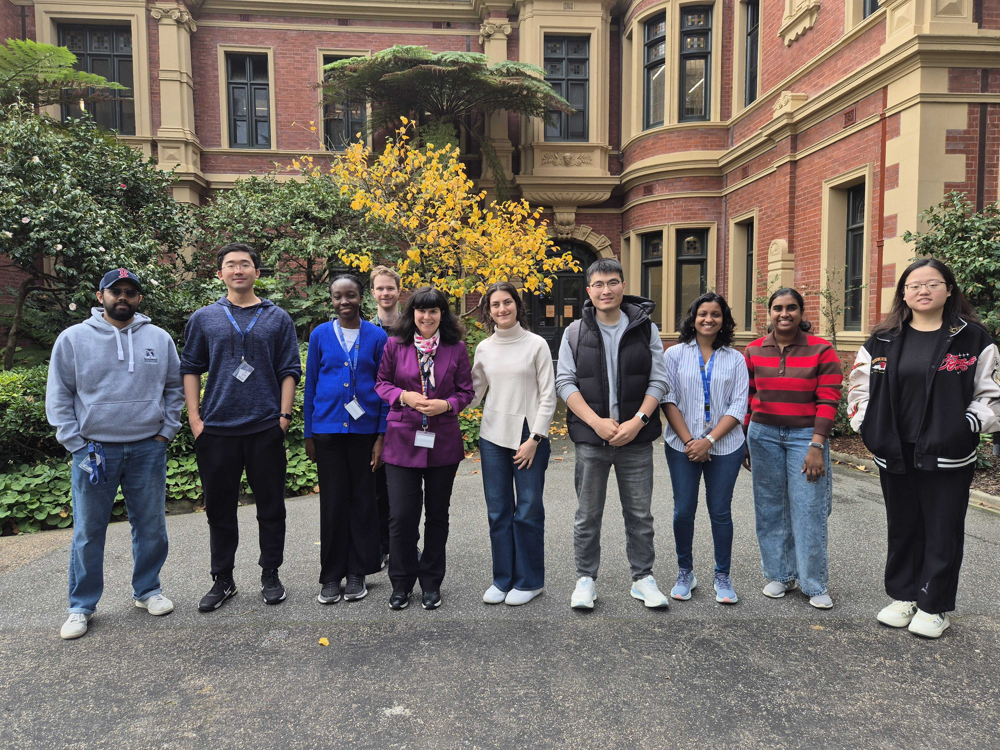

Vision
Turn vast, complex data into reliable insight that advances science, industry, and society.
The DANAIS (Data Nexus for Analytics & Intelligent Systems) Lab develops data and AI systems that turn large, complex datasets into reliable insight. Our research spans data management, analytics, and intelligent systems, with a focus on scalable and trustworthy technologies that support data exploration and decision-making. By bridging theory and real-world applications, DANAIS enables data-driven intelligence across scientific, industrial, and societal domains.

Turn vast, complex data into reliable insight that advances science, industry, and society.
Bridge theory and practice to build scalable, trustworthy data and AI systems for exploration and decision-making.
Rigor, responsibility, and elegance in systems that people can trust.